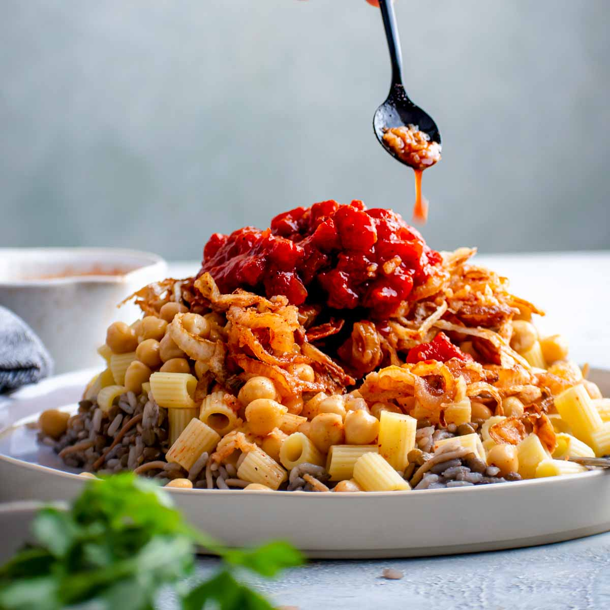
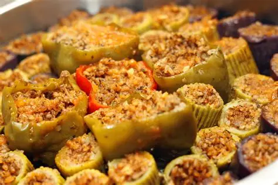

Koshari is widely recognized as Egypt’s national dish and a popular street food, often referred to as “the food of the poor” due to its affordability and filling nature.It combines rice, brown lentils, small pasta (like macaroni), and chickpeas, layered together and topped with crispy fried onions. The dish is finished with a garlicky tomato sauce, sometimes enhanced with vinegar and hot sauce for extra flavor

Mashi is a beloved Middle Eastern dish consisting of hollowed-out or rolled vegetables—such as zucchini, eggplants, bell peppers, cabbage, or grape leaves—packed with a flavorful stuffing and simmered to tender perfection. The filling typically centers around short-grain rice mixed with fresh herbs like dill, parsley, and cilantro, onions, and sometimes minced lamb or beef, all seasoned with warm spices like cumin, cinnamon, and allspice. While Egyptian versions favor a heavy herb-and-tomato base, Levantine styles lean toward garlic, lemon juice, and olive oil, and Iraqi dolma infuses tangy pomegranate molasses. The ultimate secret to a perfect mashi lies in using a specialized coring tool to hollow the vegetables safely and leaving a quarter of the space empty so the rice has room to expand without bursting the skin during cooking.
